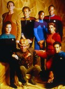
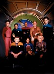

Star Trek: Deep Space Nine


Stephen Klancher: February 21, 2012 
I thought Tosk was Jem'Hadar when I first saw him... But that seemed a little early in the series for them to appear.
Stephen Klancher: June 15, 2012
I actually liked that pretty well. The old Bajoran was an enjoyable character and they didn't dismiss the conflict with a magical solution. The Federation and Bajor were pretty much the bad guys of the episode, and Major Kira was very conflicted over it.

Stephen Klancher: July 4, 2012
Excellent episode! It was exciting and it felt like it managed to let a bunch of characters play up their strengths.
Stephen Klancher: July 29, 2012
I love the "everyone is against me" type of story. Worked very well with O'Brien. Surprised they didn't call out the coffee has being important. It seemed like they kept highlighting that he kept ordering the same "double strong, double sweet" coffee over and over in that episode.
Stephen Klancher: July 31, 2012
I love the singing Klingon chef. And O'Brien asking Cardassian advice for dealing with voles. And Sisko's reaction to the voles. And Quark's demotivational speech. And everything about Dax. Also they caught a micro universe in their engines. All around a very fun episode!

Stephen Klancher: August 17, 2012
Overall a very fun episode, but... The station is exploding in five minutes, why were they only walking???
Stephen Klancher: August 21, 2012
As soon as Riker became evil Riker I realized, "oh my god, it's transporter accident Riker!" It's good to know canon like that. Also, his use of the term "tough little ship" was repeated by real Riker in First Contact.
Stephen Klancher: August 26, 2012
Future and present O'Brien in unison "I hate temporal mechanics." Also O'Brien is now from a slightly alternate timeline with a few hours of memories that didn't happen in this timeline.
Stephen Klancher: August 26, 2012
First episode after Cardasians and Romulans started a war and Sisko is building a hobby spaceship. Also, he's got the beard but hasn't shaved his head yet. It's a weird middle state.
Stephen Klancher: September 5, 2012
Some contrived moments, some good ones. James Cromwell can't be a gamma quadrant alien... He's Zefram Cochrane!
Stephen Klancher: September 8, 2012
"It was as if he understood the honor bestowed upon him. The first man in a thousand years to be killed with the Sword of Kahless." "I'm sure he was very proud."
Stephen Klancher: September 17, 2012
I really enjoyed the unique style in this episode: The characters talked in the present moment directly from their flashback scenes. Star Trek doesn't usually do that kind of thing. Also I was very amused the scene where the persistent joke keeps going: Morn was about to speak but was interrupted by the present-moment characters.
Stephen Klancher: October 7, 2012
Sisko makes a great Klingon and Gowron, as always, has got the crazy eyes.
Looking for Par'Mach in All the Wrong Places (1996) Airs on 1996-10-14
S5 - E3 of Star Trek: Deep Space Nine
S5 - E3 of Star Trek: Deep Space Nine
Stephen Klancher: November 6, 2012
I'm surprised they didn't play off the torpedos as a trick or something. Even though they implied that everyone escaped, Sisko did act as the villain.
Stephen Klancher: December 16, 2012
"You are the dreamer... and the dream." Really enjoyed this episode. Especially Quark and Odo out of costume.
Stephen Klancher: January 1, 2013
Pretty cool episode... also, it's fake: http://www.youtube.com/watch?v=7qKcJF4fOPs
Stephen Klancher: January 2, 2013
Awwwww... Though c'mon... security implications of a holosuite character who can communicate at will via external comms and transfer himself into other holosuites at will?
Stephen Klancher: January 6, 2013
Another very silly one: "I am a Klingon warrior, and a Starfleet officer. I've piloted starships through Dominion minefields; I've stood in battle against Kelvans twice my size; I courted and won the heart of the magnificent Jadzia Dax. If I can do these things, I can make this child go to sleep!"
Stephen Klancher: January 10, 2013
Cool episode with a lot going on but... The prophets arranged Sisko's birth? Whaaaat?
Stephen Klancher: January 13, 2013
Seeing characters in an entirely different setting is enough fun to outweigh the silliness.
Stephen Klancher: January 17, 2013
Star Trek takes on veteran's PTSD of one of the regular characters. I like how they've been using the recurring hologram character Vic Fontaine to give the characters a whole new setting and buddy-character.
Stephen Klancher: February 2, 2013
A very satisfying end to a great series. Big space battles and wrapping up all the relationships and friendships. Damar became a pretty solid character. I enjoyed the flashbacks at the end but was really surprised they didn't include Jadzia.
Some scifi technical commentary here... You can't have a being that exists outside of linear time which is also concerned about what a human might do in the future. Doesn't make sense. Also, they way they described the method of moving the station was basically the same as in Mass Effect.